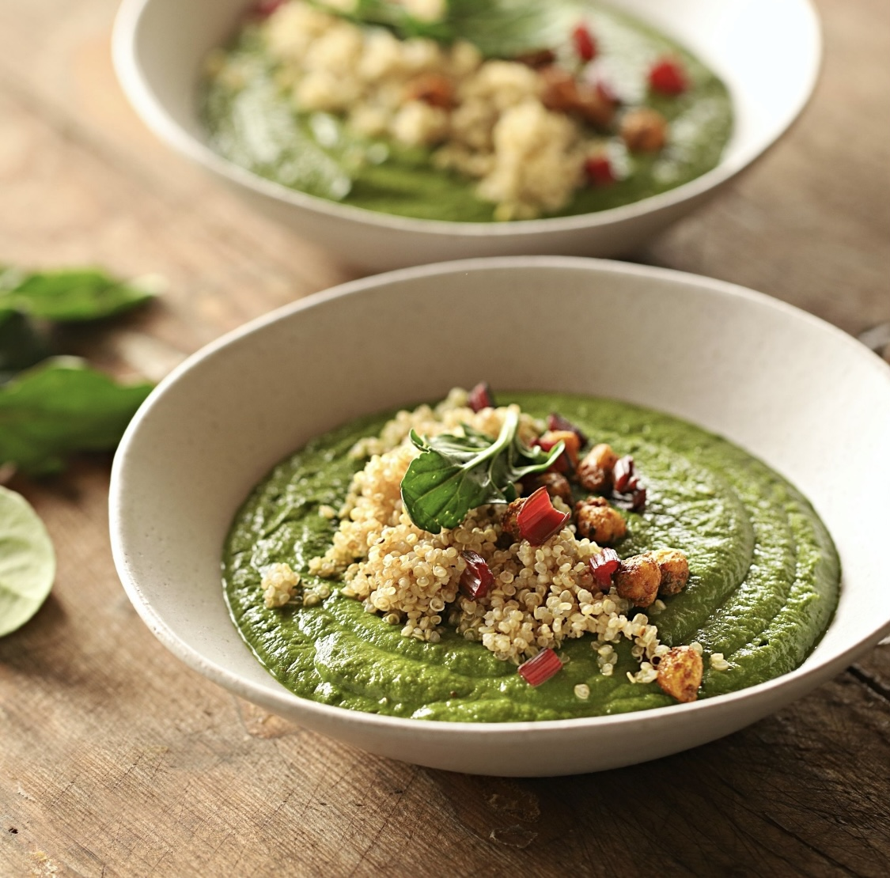
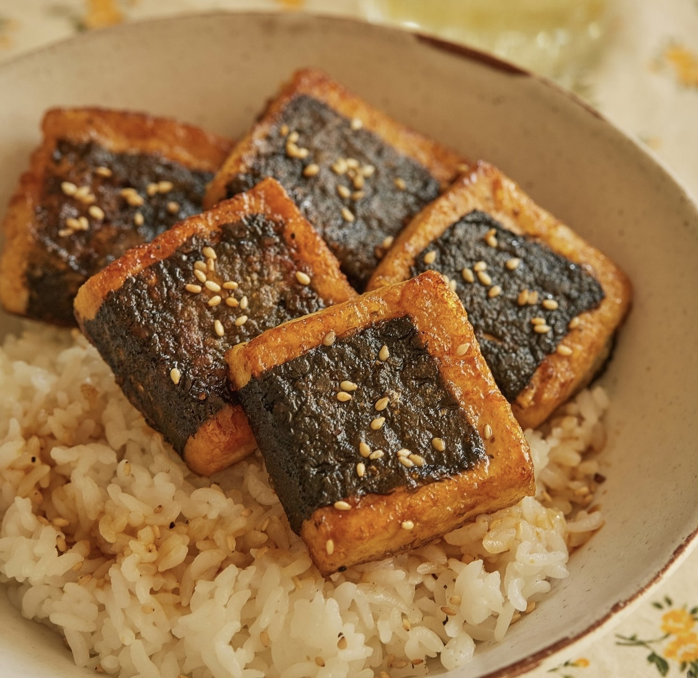

활동내역
레시피

시금치커리
시금치를 좋아해서 레시피를 찾고 있었는데 좋은레시피를 찾은거 같아 기분이 좋습니다!
카페·베이커리
지구제과
좋아하는 유튜버가 자주가서 저도 방문해 보았습니다.
식당
다이너재키
제일 좋아하는 채식식당 중 하나 인데 매번 새로운메뉴를 먹어보면서 만족하고 있습니다.
레시피

김두부덮밥
집에 두부가 남아서 고민하고 있었는데 레시피를 찾아 쉽게 만들어 먹을수있었어요!